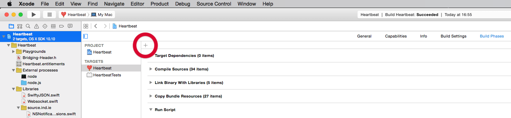

Build-time optimisation with Xcode build scripts
13th February, 2015 —
Yesterday, I sideways-glanced at the binary size for Heartbeat and almost had a heart attack when I saw it was a little over 220MB.
Say what? There should be nothing in there causing that sort of bloat. Let’s take a closer look:
Shell (source):find . -type f -exec du -a {} + | sort -n -r
24064 ./Heartbeat/node 19480 ./node.js/node_modules/indie-pulse-process/pulse/pulse-linux-amd64-1.0.0+14-gd2cd1f4/pulse 19480 ./node.js/node_modules/indie-pulse-config/node_modules/indie-pulse-process/pulse/pulse-linux-amd64-1.0.0+14-gd2cd1f4/pulse 19320 ./node.js/node_modules/indie-pulse-process/pulse/pulse-macosx-amd64-1.0.0+14-gd2cd1f4/pulse 19320 ./node.js/node_modules/indie-pulse-config/node_modules/indie-pulse-process/pulse/pulse-macosx-amd64-1.0.0+14-gd2cd1f4/pulse …
The output above is the top view rows from the current source folder (sans .git files), not the Resources folder of the binary, but you get the idea. The actual output from yesterday showed me that the Pulse Process module had six checked-in versions of Pulse, and was being included twice as it was being used by the Pulse Config module. Those two alone were adding ~120MB to the binary size.
Eeek!
So the problem — aside from my willingness to liberally check in different versions of Pulse — was Node.js. Or, more precisely, how Node handles dependencies.
Wait a minute… did you say Node? In a native Mac app?
Yep, Node.
I’ve separated the presentation and business logic in Heartbeat so that the former is encapsulated in a native Cocoa client and the latter is handled in Node. This keeps the content layer as hackable and portable as possible and still allows me the freedom to try and craft a beautiful, accessible experience that respects the native culture of the Mac platform.
It means that if other developers want to port Heartbeat to other platforms in the future, their jobs will be easier. But not at the expense of the experience of every person using it.
So even though the bulk of the binary size optimisation involved deleting some unused files, it was immediately apparent that there was still more I could do.
Specifically:
- Even though I removed most of the Pulse binaries, the indie-pulse-process module still has a Linux version of Pulse checked in. This is important as it is used by Waystone (which runs on an Ubuntu box) and so I can’t remove it from the module. I still should remove it from the final binary, though, as it adds 20MB to it.
- A number of popular node modules are used by a large number of other modules. At least in my modules, I can make sure that they were using the same versions of these modules and then, in the final binary, keep one copy and create symlinks from everywhere else.
So it became clear that I really needed to be able to do all this during build time.
Xcode Run Script Build Phase to the rescue!
Thankfully, Xcode has a lovely Run Script Build Phase that I learned about thanks to Uli’s post from back in 2005.
To use it:
- Select your Project in the Project Navigator (⌘1).
- Select your Target → Build Phases.
- Press the + button for Add a new Build Phase (see figure).
- Select New Run Script Phase.
You can use any shell that’s installed on your system and you have access to some very useful environment variables.

To see a full list of them, create a script that just has the following in it:
Run Script (source):env
Build (⌘B) and then look in the Report Navigator (⌘8)
Next to Run custom shell script ‘Run Script’, you should see a list of environment variables. But wait, that’s not the best way to view them. For one thing, they’re all jumbled up and, for another, they’re limited to the first 200. To see them in a manner befitting a dev of your stature, click on the Run custom shell script ‘Run Script’ line to select it and you should see a little expansion icon appear on the right-most edge.

Click that and you will see all the variables you can use in your script in alphabetical order. Neat, huh? (Source)

So, for example, if you want to access the Resources folder in your app’s bundle, in your script you can write:
Run Script: cd ${BUILT_PRODUCTS_DIR}/${PRODUCT_NAME}.app/Contents/Resources/
Weight loss through shell scripts
So, to cut a long story short, by writing a small shell script that removes the most cursory repetition of node modules in Heartbeat, I was able to bring down the size of the binary from over 220MB yesterday to under 70MB today. And that’s without going through the module structure to find the repeated modules and replacing them with symlinks. (I did do it for an especially large one as a proof-of-concept.)
I’m sure you’ll find a hundred and one uses for running shell scripts during the build process and I hope that this little post will help you get started if you’re not already using them.